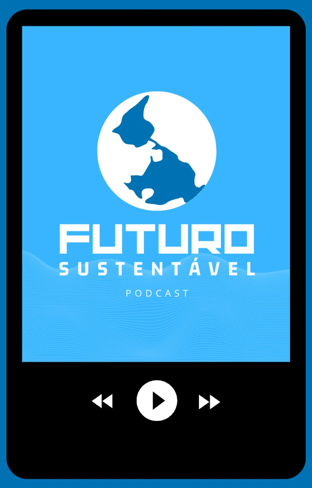
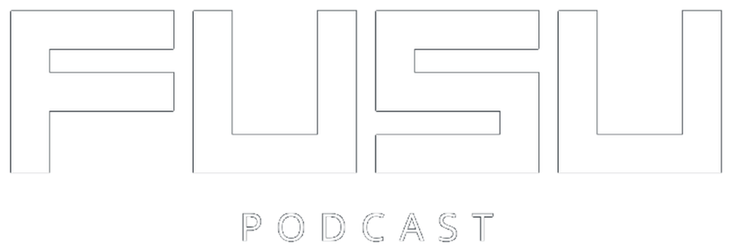
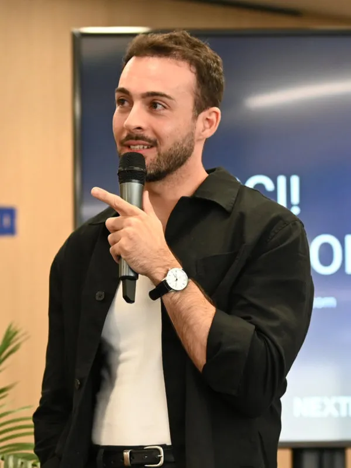
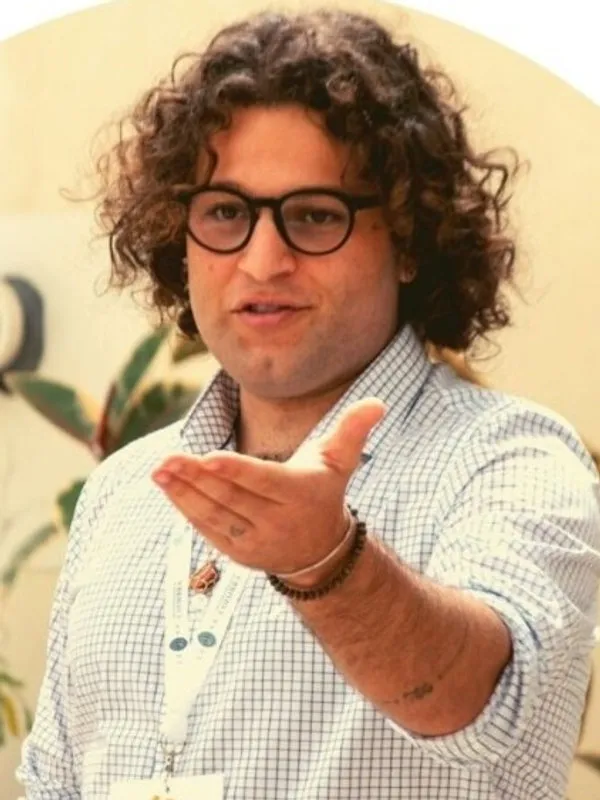
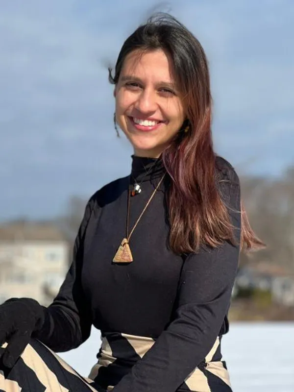

Último episódio


Conversas com quem pesquisa e pratica clima, energia e economia — sem jargão e sem discurso pronto. Entrevistas longas e Pílulas de cinco minutos, para ouvir no trajeto ou na fila do café.
 Menção Honrosa no prêmio Escola da Energia da Fundação EDP, 2025.
Menção Honrosa no prêmio Escola da Energia da Fundação EDP, 2025.
Último episódio

Em destaque
Carregando o episódio…
Episódios recentes
As entrevistas trazem convidadas e convidados que trabalham com clima, energia e economia. As Pílulas destrincham uma notícia em cinco minutos.
Carregando os episódios…
Sobre o que falamos
Como é que se vive bem sem consumir o planeta? Cada tema abre a busca já filtrada nos episódios.
Renováveis, hidrogénio verde, nuclear e o que ainda falta para sair dos fósseis.
02 Clima e políticaDas promessas das COP ao Acordo de Paris: o que foi prometido e o que foi cumprido.
03 Consumo e circularidadeAvaliação de ciclo de vida, fast fashion e o custo ambiental escondido nas coisas.
04 Economia e bem-estarModelos econômicos que colocam as pessoas — e não o crescimento — no centro.
05 Cidades e mobilidadeCarros elétricos, transporte público e cidades pensadas para quem mora nelas.
06 Soluções na práticaInovação, projetos de impacto e gente que já está resolvendo o problema.
O projeto
Ciência do clima explicada em conversa, não em palestra.
O FuSu nasceu de uma constatação simples: o assunto mais importante deste século costuma ser contado de forma difícil, distante ou catastrófica. Aqui é diferente — sustentabilidade entra pela conversa, com humor e com dados.
A cada episódio, chamamos alguém que trabalha com o tema — pesquisadoras, engenheiros, ativistas, empresas — para traduzir o que está em jogo e o que dá para fazer. Nas Pílulas, pegamos uma notícia da semana e mostramos o que ela significa na prática.
O objetivo não é convencer ninguém a salvar o mundo sozinho, e sim dar contexto suficiente para escolher melhor: no voto, no trabalho e no carrinho de compras.
Quem somos
Um time apaixonado por sustentabilidade, que conversa com especialistas para transformar assunto complexo em pauta do dia a dia.

Apresentação e edição
Trabalha com mobilidade sustentável e otimização. Conduz as entrevistas e edita os episódios.
LinkedIn de Nato Manzolli
Apresentação
Projeta soluções sustentáveis com foco em inovação e empreendedorismo. Divide o microfone nas entrevistas e nas Pílulas.
LinkedIn de Denner DédaDireção criativa
Mentora de planejamento e desenvolvimento de projetos: ajuda a tirar ideias do papel com leveza e método.
LinkedIn de Amanda Porto
Marketing
Apaixonada por descobrir lugares, rotinas e culturas — e por trazer essas inspirações para o processo criativo do FuSu. Também apresenta episódios da 2ª temporada.
LinkedIn de Luiza RochaBlog
Contexto extra, referências e bastidores de cada entrevista — para quem quer ir além do áudio.

EpisódioEconomia Circular
Em conversa com Jade Muller, especialista em Avaliação do Ciclo de Vida (ACV), exploramos a metodologia que permite compreender o verdadeiro custo ambiental de tudo o que produzimos e consumimos.

Episódio
Com a Dra. Susana Fonseca, da ZERO, conversamos sobre como colocar o bem-estar humano no centro das políticas e práticas econômicas.

Episódio
A 2ª temporada estreou com foco em minimalismo, ao lado de Ana Milhazes, criadora do Lixo Zero Portugal e autora de "Vida Lixo Zero".

Apoio institucional
O FuSu recebeu uma Menção Honrosa no prêmio Escola da Energia da Fundação EDP, em 2025, entre dezenas de candidaturas de norte a sul de Portugal. O apoio ajuda a sustentar a produção da segunda temporada.
A pauta e as opiniões dos episódios são de responsabilidade exclusiva da equipe do FuSu.